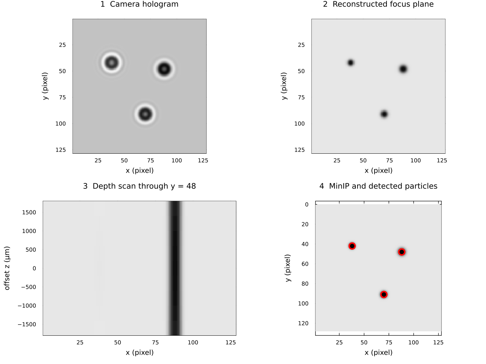

From hologram to particles
What a camera records
A coherent beam illuminates small objects. Light that passes directly through the volume interferes with light diffracted by the objects, producing rings and fringes on the camera. The camera records intensity, not optical phase. A hologram therefore looks unlike an ordinary focused particle photograph.

The four panels follow one small numerical example from left to right and top to bottom. The camera plane contains diffraction rings rather than sharp particles. Back-propagation makes the three absorbing particles sharp in their object plane. The depth scan shows how one particle changes along the optical axis. The minimum-intensity projection collapses the depth stack to one image, and the red circles show the final detections.
The example starts from a known complex synthetic object, propagates it to a camera, and then reconstructs that known wavefront. It illustrates the geometry and data products, not the accuracy of the Gabor phase assumption or experimental phase retrieval. The figure is regenerated by docs/generate_assets.jl with the public API, so documentation drift is caught during the documentation build.
What reconstruction computes
The angular-spectrum method Fourier-transforms a complex wavefront, multiplies it by a distance-dependent transfer function, and inverse-transforms it. Doing this at several distances produces a stack of virtual focal planes. A particle becomes darkest and sharpest near its depth.
ParticleHolography has two wavefront entry points:
gabor_wavefrontuses the measured amplitude and assumes zero phase. It needs one image and is the simplest workflow, but contains the twin-image artifact.phase_retrievalalternates propagation between two measured hologram planes while restoring each measured amplitude. It needs a synchronized image pair, their separation, and camera alignment.
Why plans exist
The optical geometry is constant across a time series. PhaseRetrievalPlan and ReconstructionPlan store transfer arrays, FFT plans, and work buffers so the frame loop does not rebuild them. A plan is tied to one backend, array shape, and geometry; rebuild it when any of those change.
From intensity to coordinates
The current detection method preserves the package's established processing:
- classify dark voxels with a global threshold;
- optionally dilate each XY slice;
- run 8-connected components on each slice;
- merge components whose inclusive XY boxes overlap through depth;
- reject one-slice, tiny, or strongly elongated boxes;
- select a focus slice and calculate an intensity-weighted XY centre;
- optionally estimate equivalent diameter with Otsu binarisation.
This is not strict 3-D voxel connectivity. particle_bounding_boxes can merge non-adjacent fragments at the same XY position to suppress holographic ghosts; particle_bounding_boxes_3d only joins the immediately previous slice. Neither can separate two physical particles that overlap in XY throughout depth.
From coordinates to tracks
labonte applies the package's improved Labonté correspondence method to two successive coordinate dictionaries and returns a directed graph. enum_edge starts paths from the first graph, and append_path! extends and branches paths with later graphs. UUIDs identify detections; they must be unique across frames.
For the propagation equations and phase-retrieval steps, continue to Inline holography theory.